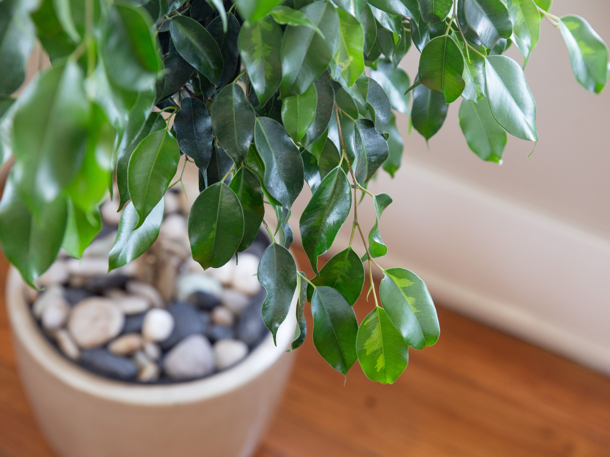
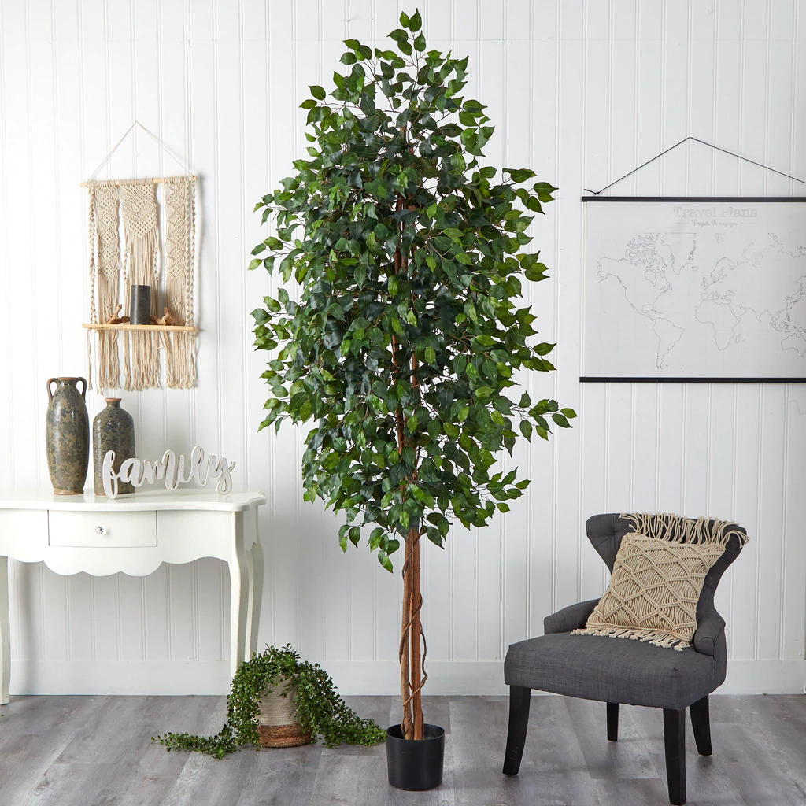
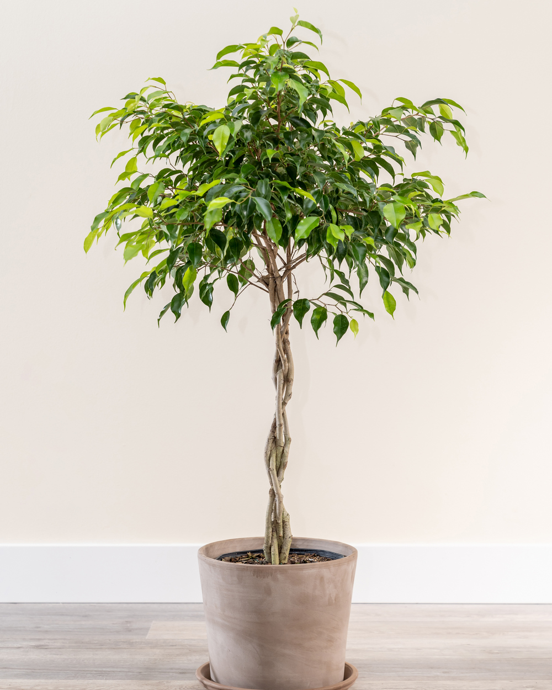

Ficus
Most ficus trees enjoy bright indirect or filtered light with variegated varieties happily able to take medium light. Bright, direct light may result in scalding of the leaves and leaf loss. Ficus trees also cannot tolerate low temperatures or drafts. They need to be kept in temperatures above 60 degrees F. (16 C.) and actually prefer temperatures above 70 degrees F. (21 C.). Cold drafts from windows or doors will harm them, so make sure to place them somewhere where drafts will not be an issue.
When growing ficus indoors, it’s important to maintain a relatively high humidity around the plant. Regular misting or setting the ficus tree on a pebble tray filled with water is a great way to increase their humidity, but keep in mind that while they like high humidity, they don’t like overly wet roots. Therefore, when watering, always check the top of the soil first. If the top of the soil is wet, don’t water as this means they have enough moisture. If the top of the soil feels dry to the touch, this indicates that they need water.



Ficus are also prone to pests such as mealybugs, scale, and spider mites. A healthy ficus tree will not see these problems, but a stressed ficus tree (likely losing leaves) will surely develop a pest problem quickly. “Sap” dripping from a ficus houseplant, which is actually honeydew from an invading pest, is a sure sign of an infestation. Treating the plant with neem oil is a good way to handle any of these pest issues.